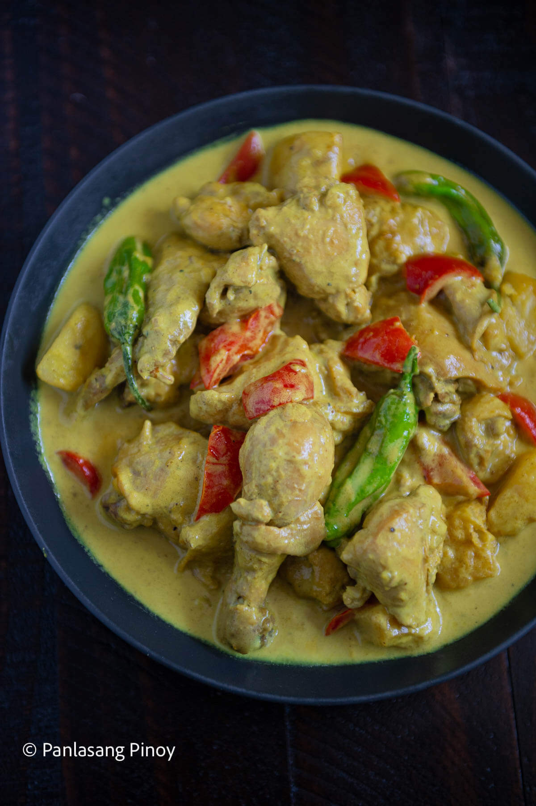

Chicken Curry

Description
A chicken curry made in filipino style.
The ingredients used and not used in this recipe make this dish different from the traditional.
Ingredients
- Fish Sauce
- Bell Pepper
- Celery
- Coconut Milk or Evaporated Milk
- Potato
- Chicken (obviously)
- Garlic
- Onion
- Ginger
- Ground Black Pepper
- Curry Powder (obviously)
Steps
- Start by frying potato and chicken.
Fried potato is best because it has a better texture.
The same way goes with the chicken.
Pan-fry these ingredients until the outer layer turns light brown.
Set aside after frying.
- The next thing to do is salute the aromatics.
These are the garlic, onion, and ginger.
You will know that it is ready when the kitchen starts to smell good.
Put the chicken back into the pan and season with fish sauce.
The curry powder can be added afterwards.
- The chicken needs to be tenderized at this point.
Pour water into the pot and let it boil.
It is suggested to add coconut milk towards the end of the process.
However, you may combine it with water if preferred.
Cook the chicken between low to medium heat until tender.
Make sure that the cooking pot is covered to trap steam.
- Add the fried potato and other vegetables afterwards.
This is also the part in the recipe wherein coconut milk is added.
It is your choice whether to add it earlier or later in the process.
By the way, make sure to adjust the taste by adding more fish sauce and
ground black pepper if needed.